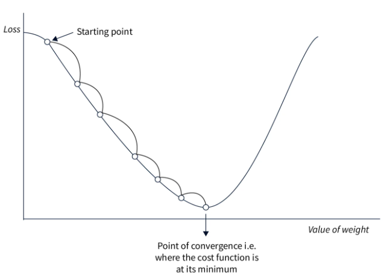

Comprender los diferentes optimizadores#
En el primer curso, presentamos el descenso del gradiente, el optimizador más sencillo para entrenar modelos de deep learning. Posteriormente, utilizamos el descenso del gradiente estocástico por mini-batch o Adam, según los escenarios.
El optimizador ajusta los parámetros del modelo durante el entrenamiento para minimizar la función de pérdida. La elección de un buen optimizador afecta tanto al rendimiento como a la velocidad de convergencia del modelo.
Este curso presenta los diferentes optimizadores existentes (lista no exhaustiva), junto con sus ventajas e inconvenientes. En la práctica, Adam suele ser la mejor opción, pero puedes probar otros optimizadores y diferentes valores de tasa de aprendizaje (el valor óptimo varía según el optimizador elegido).
Este curso se inspira en este artículo para las explicaciones e incluye sus figuras.
Descenso del gradiente#
Comencemos con un repaso del algoritmo de descenso del gradiente. Puede definirse simplemente mediante la siguiente ecuación: \(\theta = \theta - \alpha \cdot \nabla L(\theta)\) donde \(\theta\) representa los parámetros del modelo, \(L(\theta)\) es la pérdida sobre el conjunto de datos y \(\alpha\) es la tasa de aprendizaje.
En resumen, en cada paso del entrenamiento, se ajustan los parámetros del modelo para minimizar la pérdida en todo el conjunto de datos.
A continuación, se muestra una figura que ilustra el principio del descenso del gradiente:

Este enfoque es sencillo de implementar y funciona bien con pequeñas cantidades de datos si la tasa de aprendizaje se elige correctamente. Sin embargo, dado que se calcula la pérdida sobre todo el conjunto de datos antes de ajustar los pesos, este método es muy lento para grandes conjuntos de datos y, en la práctica, resulta inutilizable. Además, la elección de la tasa de aprendizaje es crucial y debe ser precisa, lo cual no siempre es evidente.
Descenso del gradiente estocástico#
Este método adapta el descenso del gradiente para conjuntos de datos voluminosos. En lugar de modificar los parámetros después de procesar todos los datos, se calcula la pérdida sobre una parte de los datos (un mini-batch) y se ajustan los pesos en función de esta pérdida. Por eso se habla de un método estocástico: los ajustes se realizan sobre una porción de los datos, lo que no siempre reduce la pérdida global. En la práctica, tras varias iteraciones, la pérdida global disminuye y el modelo converge más rápidamente.
La fórmula es casi idéntica: \(\theta = \theta - \alpha \cdot \nabla L(\theta;x^{(i)};y^{(i)})\) donde \((x^{(i)},y^{(i)})\) representa un mini-batch de datos.

Como muestra la figura, la pendiente no es una línea recta, pero el modelo termina convergiendo hacia el mínimo global.
Este método es mucho más rápido que el descenso del gradiente clásico, especialmente en grandes conjuntos de datos. Además, permite evitar más fácilmente los mínimos locales gracias a la inestabilidad del proceso. Sin embargo, esta inestabilidad requiere una tasa de aprendizaje bien elegida para funcionar de manera óptima.
Descenso del gradiente estocástico con momentum#
Este optimizador retoma el principio del descenso del gradiente estocástico, añadiendo un término llamado momentum. Como su nombre indica, este término permite “recordar” la dirección de la optimización previa y empuja a la optimización actual a continuar en la misma dirección. Este término se calcula y actualiza mediante un promedio exponencialmente decreciente. Es muy útil para resolver el problema de los gradientes débiles (regiones planas).
La fórmula es la siguiente: \(v = \beta \cdot v + (1 - \beta) \cdot \nabla_\theta L(\theta; x^{(i)}; y^{(i)})\) \(\theta = \theta - \alpha \cdot v\) donde \(v\) es el vector de momentum y \(\beta\) es un hiperparámetro (calculado mediante un promedio exponencialmente decreciente) que ajusta el impacto del valor actual.

En la práctica, esto ayuda a atravesar las regiones planas de la función de pérdida de manera más eficiente, al tiempo que aumenta la velocidad de convergencia. Sin embargo, la elección del parámetro momentum es importante, ya que un valor demasiado grande podría hacer que “saltemos” la solución óptima. En la práctica, este término se elige en función del tamaño del mini-batch (batch size).
Promedio exponencialmente decreciente: Método de suavizado de datos en el que cada nuevo valor tiene un peso que decrece exponencialmente, dando más importancia a los valores recientes mientras se reduce progresivamente el impacto de los valores pasados.
Adagrad#
Adagrad es un optimizador que ajusta la tasa de aprendizaje por parámetro durante el entrenamiento. La tasa de aprendizaje de cada parámetro se basa en el historial de los gradientes. La idea es que los parámetros que se ajustan con frecuencia tendrán una tasa de aprendizaje más pequeña que aquellos que se ajustan rara vez.
La fórmula se expresa de la siguiente manera: \(g = \nabla_\theta L(\theta; x^{(i)}; y^{(i)})\) \(G = G + g \odot g\) \(\theta = \theta - \frac{\alpha}{\sqrt{G + \epsilon}} \odot g\) donde \(G\) es la matriz que acumula el cuadrado de los gradientes (para evitar valores negativos) y \(\epsilon\) es un valor pequeño para evitar la división por cero.
Este método es eficiente cuando los datos de entrenamiento son muy diferentes entre sí, ya que ajusta los parámetros según su frecuencia de aparición. Sin embargo, la tasa de aprendizaje disminuye continuamente, lo que puede provocar una convergencia muy lenta o incluso una no convergencia si la tasa de aprendizaje se vuelve demasiado pequeña antes de que finalice la optimización.
RMSProp#
RMSProp se basa en la misma idea que Adagrad, pero corrige algunos de sus inconvenientes. En lugar de disminuir la tasa de aprendizaje progresivamente durante el entrenamiento, RMSProp utiliza un promedio exponencialmente decreciente sobre los cuadrados de los gradientes, a diferencia de Adagrad, que los suma. Esto soluciona el principal problema de Adagrad: la disminución continua de la tasa de aprendizaje sin posibilidad de retroceder.
La fórmula de RMSProp es la siguiente: \(g = \nabla_\theta L(\theta; x^{(i)}; y^{(i)})\) \(G = \beta \cdot G + (1 - \beta) \cdot g \odot g\) \(\theta = \theta - \frac{\alpha}{\sqrt{G + \epsilon}} \odot g\) donde \(\beta\) es el parámetro para gestionar el promedio exponencialmente decreciente.
Las ventajas son las mismas que con Adagrad, excepto que la convergencia es más rápida. Sin embargo, a veces esto no es suficiente y la convergencia sigue siendo demasiado lenta.
AdaDelta#
AdaDelta es un optimizador bastante similar a RMSProp, pero no requiere una tasa de aprendizaje como hiperparámetro. Para compensar esto, AdaDelta utiliza un promedio exponencialmente decreciente sobre los gradientes y los cuadrados de los gradientes para determinar un valor de ajuste coherente.
La fórmula de AdaDelta es la siguiente: \(g = \nabla_\theta L(\theta; x^{(i)}; y^{(i)})\) \(G = \beta \cdot G + (1 - \beta) \cdot g \odot g\) \(\Delta\theta = - \frac{\sqrt{S + \epsilon}}{\sqrt{G + \epsilon}} \odot g\) \(S = \beta \cdot S + (1 - \beta) \cdot \Delta\theta \odot \Delta\theta\) \(\theta = \theta + \Delta\theta\) donde \(G\) es la matriz que acumula los gradientes y \(S\) es la matriz que acumula el cuadrado de los ajustes.
Este método es interesante porque no requiere elegir una tasa de aprendizaje. Sin embargo, puede converger lentamente y la tasa de aprendizaje calculada puede volverse demasiado pequeña, lo que provocaría la detención del entrenamiento.
Adam#
Adam es probablemente el optimizador más utilizado en la actualidad. Combina las ideas del descenso del gradiente con momentum y de RMSProp. Adam utiliza un promedio exponencialmente decreciente sobre los gradientes y los cuadrados de los gradientes para ajustar la tasa de aprendizaje, al igual que RMSProp. Además, calcula un término de momentum para acelerar la optimización.
La fórmula es la siguiente: \(g = \nabla_\theta L(\theta; x^{(i)}; y^{(i)})\) \(m = \beta_1 \cdot m + (1 - \beta_1) \cdot g\) \(v = \beta_2 \cdot v + (1 - \beta_2) \cdot g \odot g\) \(\hat{m} = \frac{m}{1 - \beta_1^t}\) \(\hat{v} = \frac{v}{1 - \beta_2^t}\) \(\theta = \theta - \frac{\alpha}{\sqrt{\hat{v}} + \epsilon} \odot \hat{m}\) donde \(m\) es el vector de momentum, \(v\) es el vector de velocidad, \(\beta_1\) es el factor de decaimiento para el momentum y \(\beta_2\) es el factor de decaimiento para la velocidad.
Se trata del optimizador más rápido para la convergencia y funciona bien con datos ruidosos. Sin embargo, requiere definir tres hiperparámetros, lo que puede resultar algo complejo.
En la práctica, Adam funciona extremadamente bien y, por lo general, solo es necesario modificar el parámetro de la tasa de aprendizaje. Las valores por defecto de \(\beta_1\) y \(\beta_2\) rara vez necesitan ser modificados (en PyTorch, por defecto son \(\beta_1=0.9\) y \(\beta_2=0.999\)). Además, a diferencia del descenso del gradiente estocástico, no es indispensable elegir una tasa de aprendizaje precisa para obtener una buena optimización.
Nota: En general, recomiendo utilizar Adam o AdamW (versión mejorada de Adam) como optimizador por defecto. Según el problema, es posible que debas probar otros optimizadores.
Otra nota: Según el optimizador elegido, el espacio de memoria necesario durante el entrenamiento del modelo varía. En la era de los modelos grandes como los LLM, es importante tener esto en cuenta. Aquí tienes algunas indicaciones sobre el costo en memoria según el optimizador (\(n\) es el número de parámetros del modelo):
Costo en memoria n: Descenso del gradiente estocástico (SGD)
Costo en memoria 2n: SGD con momentum, Adagrad, RMSProp
Costo en memoria 3n: Adam y sus variantes (AdamW, AdaMax, Nadam)
Consideraciones sobre la elección de la tasa de aprendizaje#
La elección de la tasa de aprendizaje está estrechamente ligada a la del optimizador. A continuación, se presentan las situaciones posibles según la elección de la tasa de aprendizaje:

En el primer caso, la tasa de aprendizaje es demasiado baja, lo que ralentiza la convergencia del modelo. Esto resulta costoso en tiempo y recursos.
En el segundo caso, la tasa de aprendizaje está bien elegida y disminuye lo suficientemente rápido como para alcanzar el mínimo de la función de pérdida. Este es el valor que buscamos encontrar.
En el último caso, la tasa de aprendizaje es demasiado alta, lo que provoca ajustes excesivos en los parámetros. Esto puede llevar a una no convergencia o incluso a una divergencia del modelo.
Estas consideraciones son cruciales para elegir la tasa de aprendizaje cuando se utiliza el descenso del gradiente estocástico. Para Adam, este es un hiperparámetro importante, pero el margen de error es mayor, ya que la tasa de aprendizaje se adapta dentro del optimizador.